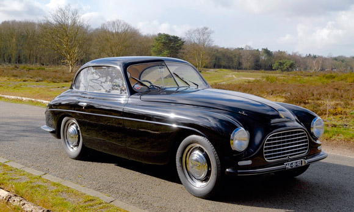

OVERVIEW
166 INTER
1948

This was Ferrari’s first 12-cylinder
engine to reach 2-litre capacity. As in
the case of the 159 S, bore sizes and
strokes were both increased, and as
usual both open-wheel and full bodywork
models were produced.
More information on www.ferrari.com